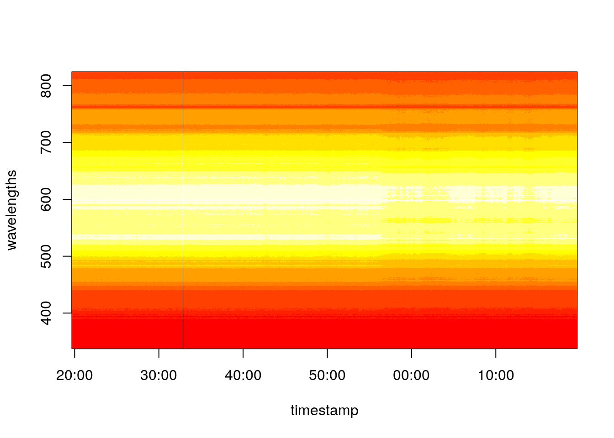
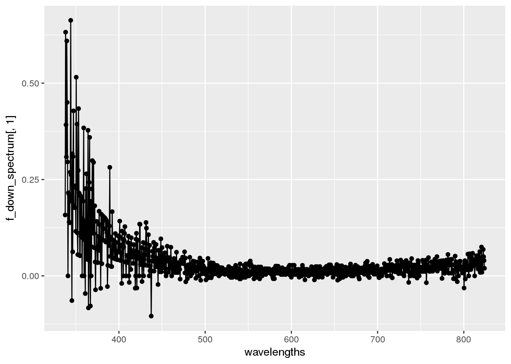
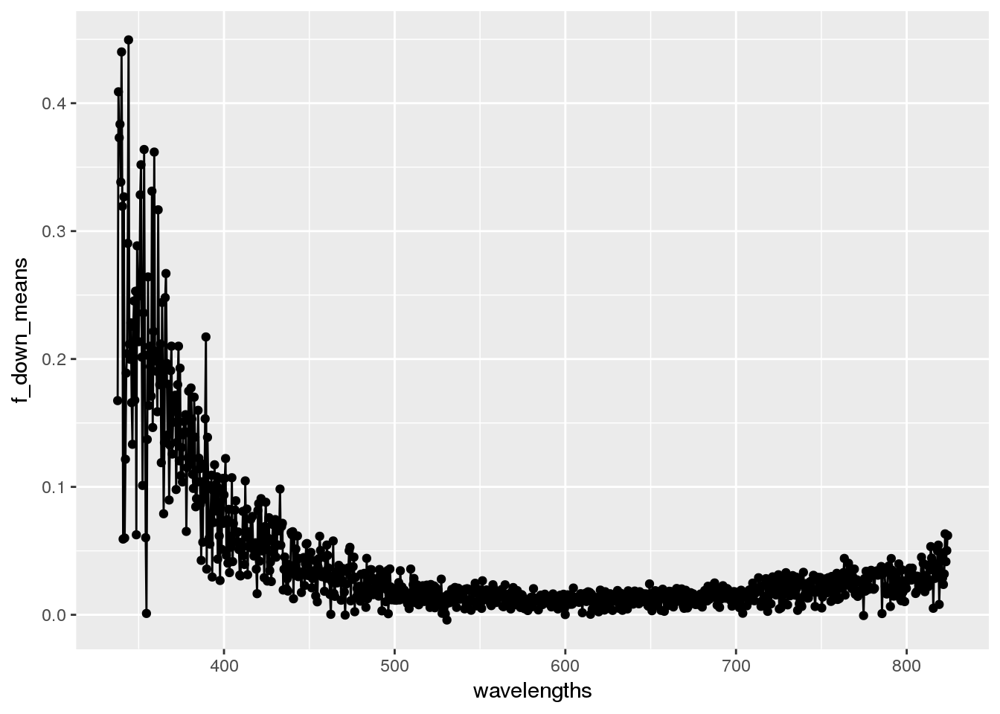
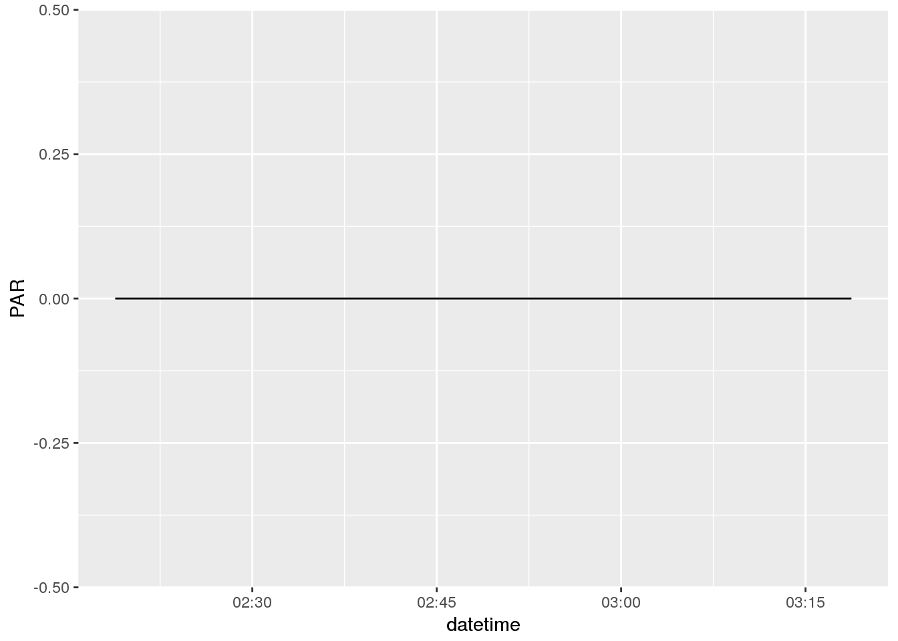

Meteorological Data
Raw Data
metfile <- "/data/terraref/sites/ua-mac/raw_data/EnvironmentLogger/2017-05-31/2017-05-31_12-19-38_environmentlogger.json"
met <- jsonlite::fromJSON(metfile)
timestamp <- lubridate::ymd_hms(met$environment_sensor_readings$timestamp)
wavelengths <- met$environment_sensor_readings$spectrometer$wavelength[[1]]
spectra <- do.call('rbind', met$environment_sensor_readings$spectrometer$spectrum)
library(dplyr)##
## Attaching package: 'dplyr'## The following objects are masked from 'package:stats':
##
## filter, lag## The following objects are masked from 'package:base':
##
## intersect, setdiff, setequal, unionspectra <- do.call('rbind', met$environment_sensor_readings$spectrometer$spectrum)
#colnames(spectra) <- wavelengths
#rownames(spectra) <- met$environment_sensor_readings$timestamp
image(x = timestamp, y = wavelengths, z = spectra)
get_downwelling_irradiance <- function(date = "2017-05-31"){
path <- file.path("/data/terraref/sites/ua-mac/raw_data/EnvironmentLogger", date)
files <- dir(path, full.names = TRUE)
metdata <- lapply(files, jsonlite::fromJSON)
timestamp <- unlist(lapply(metdata, function(x){
lubridate::ymd_hms(x$environment_sensor_readings$timestamp)
}))
wavelengths <- metdata[[1]]$environment_sensor_readings$spectrometer$wavelength[[1]]
spectra <- do.call('rbind', lapply(metdata, function(x){
do.call('rbind', x$environment_sensor_readings$spectrometer$spectrum)
}
))
met <- do.call('rbind', lapply(metdata, function(x){
tmp_met <- x$environment_sensor_readings
data.frame(par = tmp_met$`sensor par`$value,
co2 = tmp_met$`sensor co2`$value,
sundir = tmp_met$weather_station$sunDirection$value,
pressure = tmp_met$weather_station$airPressure$value,
brightness = tmp_met$weather_station$brightness$value,
rh = tmp_met$weather_station$relHumidity$value,
temp = tmp_met$weather_station$temperature$value,
wind_dir = tmp_met$weather_station$windDirection$value,
wind_speed = tmp_met$weather_station$windVelocity$value)
}))
z <- met %>% tidyr::gather(key = timestamp, value = value)
# image(x = timestamp, y = wavelengths, z = spectra)
}library(ncdf4)
metnc <- nc_open('/data/terraref/sites/ua-mac/Level_1/EnvironmentLogger/2017-05-16/EnvironmentLogger_lv1_2017-05-16_uamac.nc')
library(lubridate)## Loading required package: methods##
## Attaching package: 'lubridate'## The following object is masked from 'package:base':
##
## datelibrary(data.table)## -------------------------------------------------------------------------## data.table + dplyr code now lives in dtplyr.
## Please library(dtplyr)!## -------------------------------------------------------------------------##
## Attaching package: 'data.table'## The following objects are masked from 'package:lubridate':
##
## hour, isoweek, mday, minute, month, quarter, second, wday,
## week, yday, year## The following objects are masked from 'package:dplyr':
##
## between, first, lastlibrary(udunits2)## udunits system database readtime <- ncvar_get(metnc, 'time')
datetime <- ymd("1970-01-01") + seconds(ud.convert(time, 'd', 's'))
wavelengths <- ncvar_get(metnc, 'wvl_lgr')
f_down_spectrum <- ncvar_get(metnc, 'flx_spc_dwn')
library(ggplot2)
ggplot() +
geom_point(aes(wavelengths, f_down_spectrum[,1])) +
geom_line(aes(wavelengths, f_down_spectrum[,1]))
f_down_means <- rowMeans(f_down_spectrum)
ggplot() +
geom_point(aes(wavelengths, f_down_means)) +
geom_line(aes(wavelengths, f_down_means))
print(metnc)## File /data/terraref/sites/ua-mac/Level_1/EnvironmentLogger/2017-05-16/EnvironmentLogger_lv1_2017-05-16_uamac.nc (NC_FORMAT_NETCDF4):
##
## 32 variables (excluding dimension variables):
## short sensor_par[] (Contiguous storage)
## sensor_par_description: Quantum Sensor Produced by Apogee. Measures the Photosynthetically Active Radiation (aka PAR)
## sensor_par_created: Mon Jan 09 09:14:22 CST 2017
## sensor_par_id: 5873a8ce4f0cad7d8131ad86
## sensor_par_authorId: 578f76948e7e1aecb7cad4c5
## sensor_par_spaces:
## sensor_par_thumbnail: None
## sensor_par_name: Quantum PAR
## short sensor_co2[] (Contiguous storage)
## sensor_co2_description: CO2 Probe Produce by Vaisala, Mark GMP343. Monitors the atmospheric CO2 concentration
## sensor_co2_created: Mon Jan 09 09:17:38 CST 2017
## sensor_co2_id: 5873a9924f0cad7d8131b648
## sensor_co2_authorId: 578f76948e7e1aecb7cad4c5
## sensor_co2_spaces:
## sensor_co2_thumbnail: 5873a99e4f0cad7d8131b6dc
## sensor_co2_name: Vaisala CO2
## short sensor_spectrum[] (Contiguous storage)
## sensor_spectrum_description: Spectrometer Produced by Skye PRI sensor. Measures the incident and reflected light
## sensor_spectrum_created: Mon Jan 09 09:15:35 CST 2017
## sensor_spectrum_id: 5873a9174f0cad7d8131b09a
## sensor_spectrum_authorId: 578f76948e7e1aecb7cad4c5
## sensor_spectrum_spaces:
## sensor_spectrum_thumbnail: None
## sensor_spectrum_name: Skye PRI
## short sensor_weather_station[] (Contiguous storage)
## sensor_weather_station_description: Weather Station Produced by Theis CLIMA. Collects atmospheric data (e.g., brightness, precipitation, etc.).
## sensor_weather_station_created: Mon Jan 09 09:17:06 CST 2017
## sensor_weather_station_id: 5873a9724f0cad7d8131b4d3
## sensor_weather_station_authorId: 578f76948e7e1aecb7cad4c5
## sensor_weather_station_spaces:
## sensor_weather_station_thumbnail: 5873a97f4f0cad7d8131b56d
## sensor_weather_station_name: Thies CLIMA
## float temperature[time] (Chunking: [1024])
## units: celsius
## sensor: sensor_weather_station
## long_name: Atmosperic Temperature
## float raw_temperature[time] (Chunking: [1024])
## float airPressure[time] (Chunking: [714])
## units: pascal
## sensor: sensor_weather_station
## standard_name: atmospheric_air_pressure
## long_name: Atmospheric Air Pressure
## float raw_airPressure[time] (Chunking: [714])
## float brightness[time] (Chunking: [714])
## units: lux
## sensor: sensor_weather_station
## long_name: Brightness
## float raw_brightness[time] (Chunking: [714])
## float precipitation[time] (Chunking: [714])
## units: meter second-1
## sensor: sensor_weather_station
## standard_name: precipitation_flux
## long_name: Precipation Rate
## float raw_precipitation[time] (Chunking: [714])
## float sunDirection[time] (Chunking: [714])
## units: degree
## sensor: sensor_weather_station
## long_name: Solar zenith (or elevation) angle (under discussion right now)
## float raw_sunDirection[time] (Chunking: [714])
## float windVelocity[time] (Chunking: [714])
## units: meter second-1
## sensor: sensor_weather_station
## long_name: Wind Speed
## float raw_windVelocity[time] (Chunking: [714])
## float relHumidity[time] (Chunking: [714])
## units: percent
## sensor: sensor_weather_station
## standard_name: relative_humidity
## long_name: Relative Humidity
## description: Ratio of partial pressure of water vapor to equilibrium vapor pressure at measured temperature
## float raw_relHumidity[time] (Chunking: [714])
## float windDirection[time] (Chunking: [714])
## units: degree
## sensor: sensor_weather_station
## standard_name: wind_from_direction
## long_name: Wind Direction
## float raw_windDirection[time] (Chunking: [714])
## float spectrum[wvl_lgr,time] (Chunking: [1024,1])
## sensor: sensor_spectrum
## units: meter
## long_name: Spectrum from Hyperspectral Camera Spectrometer
## notes: 1024*<time> number of discrete wavelengths collected by the spectrometer
## float maxFixedIntensity[time] (Chunking: [714])
## sensor: sensor_spectrum
## units: placeholder
## long_name: Max Fixed Intensity
## notes: maximum_fix_intensity (always equals to 2^14-1=16383)
## float Atmosperic_CO2_Concentration[time] (Chunking: [714])
## units: mol mol-1
## sensor: sensor_co2
## long_name: Atmosperic CO2 Concentration
## float raw_Atmosperic_CO2_Concentration[time] (Chunking: [714])
## float Photosynthetically_Active_Radiation[time] (Chunking: [714])
## units: mole second-1
## sensor: sensor_par
## long_name: Photosynthetically Active Radiation
## float raw_Photosynthetically_Active_Radiation[time] (Chunking: [714])
## double wvl_dlt[wvl_lgr] (Contiguous storage)
## units: meter
## notes: Bandwidth, also called dispersion, is between 0.455-0.495 nm across all channels. Values computed as differences between midpoints of adjacent band-centers.
## long_name: Bandwidth of environmental sensor
## float flx_sns[wvl_lgr] (Contiguous storage)
## units: watt meter-2 count-1
## long_name: Flux sensitivity of each band (irradiance per count)
## provenance: EnvironmentalLogger calibration information from file S05673_08062015.IrradCal provided by TinoDornbusch and discussed here: https://github.com/terraref/reference-data/issues/30#issuecomment-217518434
## float flx_spc_dwn[wvl_lgr,time] (Chunking: [1024,1])
## units: watt meter-2 meter-1
## long_name: Downwelling Spectral Irradiance
## standard_name: downwelling_spectral_spherical_irradiance_in_air
## float flx_dwn[] (Contiguous storage)
## units: watt meter-2
## long_name: Downwelling Irradiance
## standard_name: downwelling_spherical_irradiance_in_air
## float time_integration[] (Contiguous storage)
## units: second
## long_name: Spectrometer Integration Time
## float area_sensor[] (Contiguous storage)
## units: meter2
## long_name: Spectrometer Area
##
## 2 dimensions:
## time Size:714 *** is unlimited ***
## units: days since 1970-01-01 00:00:00
## long_name: Time
## calender: gregorian
## wvl_lgr Size:1024
## sensor: sensor_spectrum
## units: meter
## long_name: Wavelengths
## standard_name: radiation_wavelength
## notes: these wavelengths are all the same in different collections from the environmental logger. Ranging from 337.7 to 824 nm.
##
## 2 global attributes:
## _NCProperties: version=1|netcdflibversion=4.4.1|hdf5libversion=1.8.17
## history: Wed May 24 16:25:12 2017 : python terra_envlog2netcdf.pyPAR <- ncvar_get(metnc, 'Photosynthetically_Active_Radiation')
ggplot() +
geom_line(aes(datetime, PAR))
Using the PEcAn workflow
devtools::install_github("pecanproject/pecan",
subdir = 'utils')
devtools::install_github("pecanproject/pecan",
subdir = 'db')
devtools::install_github("rforge/reddyproc",
subdir = "pkg/REddyProc")
devtools::install_github("pecanproject/pecan",
subdir = 'modules/data.atmosphere',
ref = 'develop')
source("https://raw.githubusercontent.com/PecanProject/pecan/develop/models/biocro/R/met2model.BIOCRO.R")writeLines("
<pecan>
<clowder>
<hostname>terraref.ncsa.illinois.edu</hostname>
<user>dlebauer+energyfarm_met@gmail.com</user>
<password>!energyfarmmet??</password>
</clowder>
</pecan>",
con = "~/.pecan.clowder.xml")library("PEcAn.data.atmosphere")
library("dplyr")
## download raw data
ne <- download.Geostreams(
outfolder="data",
sitename="UIUC Energy Farm - NE",
start_date="2016-02-28",
end_date="2016-04-01")
## convert to standard
ne_cf <- met2CF.Geostreams(
in.path = "data/",
in.prefix = ne$dbfile.name,
outfolder = "data/cf",
start_date = "2016-03-01", # note date shift to avoid TZ issues
end_date = "2016-04-01")
## convert to model specific input
met2model.BIOCRO(
overwrite = TRUE,
in.path = "data/cf",
in.prefix = ne_cf$dbfile.name,
outfolder = "data/biocromet",
lat = 40,
lon = -88,
start_date = "2016-03-01",
end_date = "2016-03-30")## file
## 2016 data/biocromet/Clowder.UIUC Energy Farm - NE.2016-02-28.2016-04-01.2016.csv
## host mimetype formatname startdate enddate
## 2016 st0hka-rstudio-z9rs4 text/csv biocromet 2016-03-01 2016-03-30
## dbfile.name
## 2016 Clowder.UIUC Energy Farm - NE.2016-02-28.2016-04-01met <- readr::read_csv('data/biocromet/Clowder.UIUC Energy Farm - NE.2016-02-28.2016-04-01.2016.csv')Laser Scanner Point Clouds
netCDF hyperspectral data
hsi_nc <- nc_open('/data/terraref/sites/samples/vnir_test_small.nc')